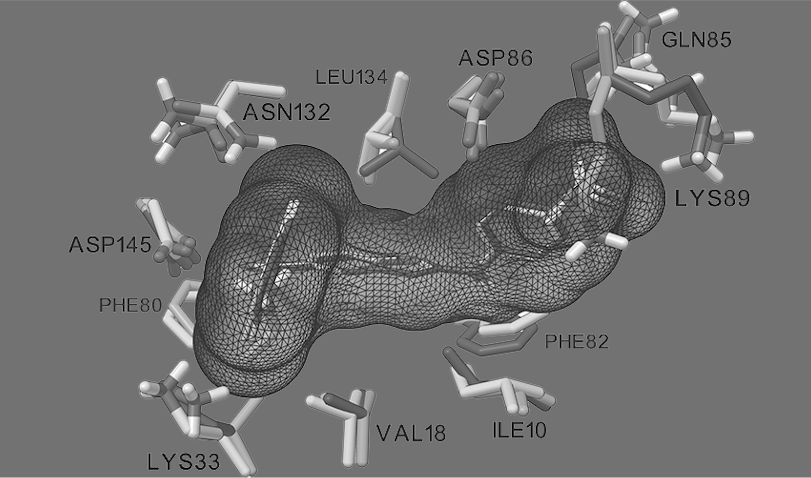

AutoDockFR (ADFR) is a protein–ligand docking program developed in the Sanner laboratory at Scripps Research under the AutoDock umbrella. It uses:
- the AutoDock4 scoring function, implemented in a C++ library and wrapped for Python;
- its own genetic algorithm, which evolves and optimizes several solutions at once, handles large numbers of rotatable bonds, and stops a search when it converges, possibly before using all the energy evaluations it was given;
- a generic representation of molecular flexibility, the Flexibility Tree, which supports many kinds of motion in both the ligand and the receptor.
ADFR supports the docking modes of AutoDock4 and Vina, but it was designed specifically to include selective receptor flexibility, and it also supports covalent docking. Its custom genetic algorithm can dock ligands with more rotatable bonds than AutoDock4. ADFR is distributed as part of the ADFR software suite, which provides additional tools for automated docking.
Ease of use
ADFR streamlines the docking procedure and supports managing and reproducing docking experiments through data provenance. Self-documenting files store:
- the binding-pocket representation used for docking (target files,
.trg), and - the docking results (Docking Result Object files,
.dro).
The metadata in these files supports reproducibility and reduces the risk of operator errors, such as mixing up affinity maps.
Input
- Ligands are prepared for docking with AutoDock, in the PDBQT format; ADFR derives the ligand’s flexibility from its rotatable bonds.
prepare_ligandconverts a ligand PDB file to PDBQT. - The receptor is given as a target file, a single file describing the receptor. Target files are computed from a receptor PDBQT file with
agfron the command line or with the graphical interfaceagfrgui(see AutoGridFR).prepare_receptorconverts a receptor PDB file to PDBQT; see how to create a PDBQT file for a receptor.
Usage
Given a receptor and a ligand in PDBQT format, a simple docking runs like this:
agfr -r rec.pdbqt -l xtallig.pdbqt -o target
adfr -t target.trg -l lig.pdbqt -J firstDockingLine 1 uses the native ligand xtallig.pdbqt of receptor rec.pdbqt to define a docking box covering the pocket and computes the AutoDock affinity maps, stored in target.trg. Line 2 docks the ligand lig.pdbqt into this pocket. More examples are in the tutorials.
Implementation
ADFR is written in object-oriented languages and built from reusable software components. Performance-critical components are in C and C++ (for example ADFRcc); others are in Python (ADFR, AutoSite, MolKit2, ProDy). See Implementation for the list of components.
What’s new in ADFR 1.2
ADFR 1.2 is available on the Download page as part of ADFRsuite 1.0.
- Accuracy: ADFR 1.2 matches AutoDock4 and AutoDock Vina on standard docking benchmark datasets, and performs better when receptor side chains are made flexible.
- Speed: efficient C++ implementations of the scoring function, the Flexibility Tree and the Solis–Wets local search.
- Ease of use:
- includes AutoGridFR, which makes it easier to specify and calculate affinity maps;
- includes an improved AutoSite (1.1) for predicting binding pockets;
- supports complex docking scenarios: flexible receptor side chains, covalent docking, hydrated docking;
- a streamlined executable that uses multi-core processors;
- streamlined output (log file, poses file and docking result object file);
- data provenance and reproducibility through target and docking result object files.
Versions
| ADFRsuite | Contains | Platforms | Install |
|---|---|---|---|
| 1.0 rc1 | ADFR 1.2, AGFR 1.2, AutoSite 1.0 and 1.1, ADCP 1.0 | Linux, macOS, Windows | Download |
| 1.1 dev | Linux | Download |
License
ADFR is released under the LGPL v2 open-source license. See License.
Publications
- Ravindranath, P. A.; Forli, S.; Goodsell, D. S.; Olson, A. J.; Sanner, M. F. AutoDockFR: Advances in Protein-Ligand Docking with Explicitly Specified Binding Site Flexibility. PLOS Comput. Biol. 2015, 11 (12), e1004586. doi:10.1371/journal.pcbi.1004586
- Zhao, Y.; Stoffler, D.; Sanner, M. Hierarchical and multi-resolution representation of protein flexibility. Bioinformatics 2006, 22 (22), 2768–2774. doi:10.1093/bioinformatics/btl481
- The CCSB home page says it is “under active development to replace the legacy AutoDockFR site” at
adfr.scripps.edu; that site no longer responds, so the link was dropped. - The CCSB
/adfr/overviewpage is the AutoGridFR overview, not ADFR’s. It was not used here.